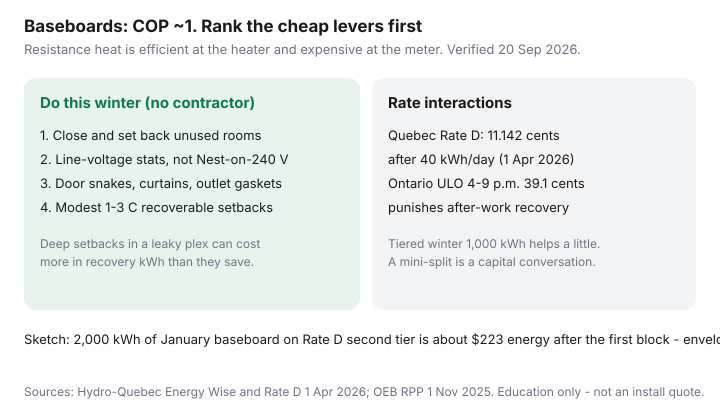

Utilities · Canada
Electric baseboard heat is expensive: a Canadian playbook to cut kWh without a full retrofit
Electric baseboards convert nearly every kilowatt-hour into heat and still wreck a Canadian January. That is not a paradox. COP ≈ 1 means you bought the heat at your full hydro ¢. A heat pump at COP 2.5 bought the same useful heat for 40% of the kWh. A 95% gas furnace bought it in cubic metres. “They’re efficient” is a physics sentence. “They’re cheap” is a bill sentence, and it is usually false.
This is a renter-and-older-home playbook that does not start with a $12,000 retrofit. Québec Rate D and Ontario TOU/ULO change the ¢ around the same heaters. If hydro is in the lease, start with heat included vs hydro. If you already know the Rate D math, keep that guide open.
Disclosure: Line-voltage smart thermostats and heat-pump quote tools are offer types. Saving Optimizer may earn a commission if we later add partner links. We do not currently claim manufacturer, Hydro-Québec, or contractor partnerships. This is education — not an install quote or electrical advice.
Key takeaways
- Baseboards are efficient at the heater and expensive at the meter. You cut hours × watts in rooms you do not need at 22°C, not by wishing for a better COP from a resistive bar.
- Zone unused rooms safely: door closed, stat down, pipes above freezing. An open door is not a zone.
- Use a line-voltage thermostat (120/240 V). A common low-voltage Nest-style unit is the wrong product on baseboards.
- Curtains, door snakes, outlet gaskets, and the attic hatch usually beat a gadget. Deep 8°C setbacks in a leaky plex can cost more in recovery kWh.
- A ductless mini-split is a capital conversation (panel, outdoor snow line, landlord). Rate D’s second tier (11.142 ¢ from 1 Apr 2026) and Ontario ULO’s 39.1 ¢ dinner block both punish recovery blasts.
Why baseboards convert nearly all kWh to heat — and still cost a fortune
Resistive heat is almost 100% efficient in the room. The waste is not in the bar. The waste is the house leaking that heat, and the tariff charging you a winter ¢ for every hour you fight the leak.
Labelled sketch: 2,000 kWh of January baseboard on Hydro-Québec’s second tier (11.142 ¢ from 1 Apr 2026) is about $223 of energy after you have already used the first 40 kWh/day block. The same useful heat on a COP 2.5 heat pump is 800 kWh. Ontario all-in ¢ after OER is often higher than Rate D’s second tier — which is why an Ontario baseboard house can look worse than a Québec plex on paper. Convert properly in useful-heat math.

Room-by-room zoning and closing off unused spaces safely
- Pick rooms nobody lives in this week (guest room, unused office).
- Close the door. Set that room’s stat down — often 15–16°C, not “off” on a plumbing wall.
- Watch for ice on the interior of single-pane glass and for pipe runs in exterior walls.
- Do not “save” by heating the stairwell through an open door. That is how the expensive room heats the house at the worst ¢.
In a one-room studio you cannot zone. You can still stop the hallway draft and the attic hatch. In a house with kids and a home office, zoning is the whole playbook.
Line-voltage smart thermostats vs dumb dials
Baseboards are switched on 120 or 240 V. The thermostat is the switch. Buy the voltage you have. A licensed electrician should confirm if you are not sure — 240 V baseboards are common in Canadian apartments.
- Accurate dumb dial that holds 19°C beats a smart stat left at 23°C.
- Line-voltage smart stat earns its keep if you will run a schedule: modest setback, pre-heat before a peak window, vacation mode you remember to turn off.
- Low-voltage “learning” stats belong on furnaces and most central heat pumps, not on a 240 V baseboard pair unless the manufacturer explicitly sells a line-voltage model.
Hydro-Québec Energy Wise and the Rate D guide both land here: a schedule you keep is a kWh lever; a gadget you do not program is décor.
Curtains, door snakes, and air sealing ROI before equipment swaps
Order of operations that does not need a contractor:
- Door snakes and a sweep on the apartment door to the corridor (stack effect is a thief).
- Heavy curtains closed at night on single-pane rooms; open them on sunny days.
- Outlet gaskets on exterior walls; weatherstrip the attic hatch; the dryer flap actually closes.
- Plastic on the worst window for one winter is ugly and sometimes rational. A $4,000 window on a lease is not.
Then attic R-value if you own the roof — NRCan zone targets. Tenants: only what you can undo. The return on a $25 snake is usually better than the return on a $200 “heater booster” gadget.
When a ductless heat pump mini-split conversation makes sense
Have it when you own (or have a landlord who will own) the wall hole and the outdoor pad, the panel has room or you can fund a service upgrade, the envelope is no longer a barn, and you will be in the home long enough to care. Cold-climate heads that actually make heat at −20°C are the product; a lock-out strip that becomes a fancy baseboard is the trap. Walk COP and backup in heat pump vs furnace.
Federal Greener Homes and OHPA intakes are closed. Price live provincial or utility stacks only. A renter’s conversation is “will you install if I stay three years,” not a personal loan for the landlord’s asset.
Québec Rate D and Ontario TOU/ULO interactions with baseboard load
| Tariff | What a dinner-hour blast pays | Tactic |
|---|---|---|
| Québec Rate D (1 Apr 2026) | 11.142 ¢ after 40 kWh/day — most January baseboard hours | Zone rooms; modest setbacks; skip Flex D unless you can shed events (event ¢ is 46.463) |
| Ontario TOU | Winter 5–7 p.m. is 20.3 ¢ on-peak | Pre-heat late afternoon (mid-peak) or hold flatter |
| Ontario ULO | Weekdays 4–9 p.m. at 39.1 ¢ | Usually a bad plan for baseboard families; pre-heat before 4 or stay on TOU/Tiered |
| Ontario Tiered | 12.0 ¢ then 14.2 ¢ after 1,000 kWh in winter | Clock-blind; still a pile of kWh — envelope still wins |
| BC Hydro tiered / TOD | Step 2 14.08 ¢; TOD +5 ¢ from 4–9 p.m. | Interior electric heat may want flat; do not add TOD if dinner is immovable |
Run Ontario numbers in the OEB calculator before you elect ULO because a neighbour’s EV likes 3.9 ¢. Baseboards are not an EV.
Sources & date stamps
- Hydro-Québec, Energy Wise / reducing electricity consumption — kWh levers, zoning, thermostats (used 20 Sep 2026).
- Hydro-Québec, Electricity Rates 2026 (1 Apr 2026) — Rate D 7.065 / 11.142 ¢; Flex D event 46.463 ¢.
- OEB, Electricity rates — TOU / ULO / Tiered 1 Nov 2025–31 Oct 2026.
- BC Hydro, Residential tiered and time-of-day pages — Step 2 and +5 ¢ evening overlay (used 20 Sep 2026).
- Saving Optimizer companions — Rate D, useful-heat math, heat pump vs furnace (same date stamp).
Frequently asked questions
If baseboards are 100% efficient, why is the bill huge?
They turn almost every kWh into heat (COP ≈ 1). A heat pump moves several units of heat per kWh. Gas delivers useful heat per m³ after AFUE. Efficiency at the heater is not cheapness at the meter.
Can I put a normal Nest-style thermostat on baseboards?
Usually no. Baseboards need a line-voltage (120/240 V) thermostat. A low-voltage stat is the wrong device unless you have a furnace or heat-pump control circuit.
Is Rate Flex D a good idea on baseboards?
Only if you can shed load during peak events. Flex D event energy is 46.463 ¢/kWh (1 Apr 2026). A plex that cannot zone will eat that ¢. Winter Credit Option cannot raise a Rate D bill.
Should I close off unused rooms?
Yes, with the door closed and that room’s stat set back — and pipes kept above freezing. Do not heat a stairwell through an open guest-room door and call it zoning.
I rent. What can I actually do?
Draft stopping you can undo, curtains, door snakes, a conversation about line-voltage stats if the lease allows, and the lease comparison. You do not buy the mini-split.